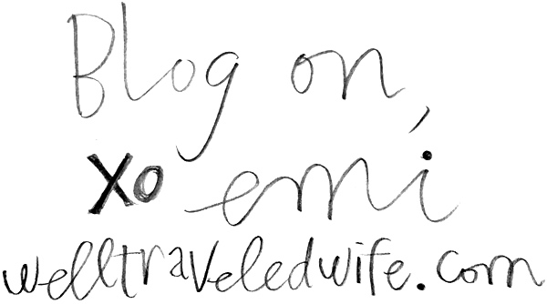

The Well Traveled Wife by Emi Rigby
Emi Rigby of The Well Traveled Wife is well traveled indeed. She travels well, eats well, and documents well. To peek into her travel log is to get a glimpse of her most exciting adventures and tastiest bites. She plans to live it up every moment, and who wouldn’t want to live vicariously through her detailed posts? Learn more about Emi and her blogging journey with Blogspotter.
How did you discover that you wanted to blog about food, travel and lifestyle? I’ve always loved to document. When my husband and I got married and moved away, I started to blog about our life and that naturally included food & travel because they are a big part of our lives. Travel is my very favorite thing, and whenever I visit a new place I love finding favorites and collecting them, writing them down, and sharing them. Lots of friends would ask me to send them my guides when they were planning trips. As I kept our personal blog up, my husband asked why I didn’t post some of my guides on it. I quickly discovered how fun it was to share my favorite places, food, & sights and connect with other people with similar interests because who doesn’t love food and travel? I knew there were lots of blogs out there, but I had found a topic and platform that was perfect for me – plus, it ties in naturally to our life and I can still document our big and small adventures.
How long have you been blogging? I started blogging right when I got married in June 2012, and we bought the Well-Traveled Wife domain in January 2013. It has been almost a year and a half with the Well-Traveled Wife!
When you started The Well Traveled Wife, what did you have in mind? When I started The Well-Traveled Wife, I mostly wanted to continue documenting and sharing our adventures and favorite finds, create travel guides and tips for favorite destinations, and partner with fun businesses to promote them. I wanted to create a brand that is trusted for recommendations and share our love of life, food, travel, and adventure.
Has it stayed pretty true to that original idea? How has it evolved? I feel lucky that it has stayed true to my ideas for the blog. Blogs can be tricky because there are so many, and lots of times people compare to other blogs, etc. I want my blog to be something that helps others have fun and eat well, but also documents our life and reflects us. I try to keep it pretty balanced between personal posts and guides/ tips/ reviews/ favorite recipes… Hopefully there’s something for everyone!
What has become your favorite subject to post about? I love telling stories from our adventures and being able to look back on them later. Writing about a trip takes me back to the place and helps the experience live on!
Where do you find inspiration for your posts? I find inspiration in my everyday experiences, thoughts, favorites, finds, and adventures. I share what I love, what I think, what I recommend, what I want to remember. I love reading other blogs and how real they are, so I try to stay real and mix up my posts based on what’s going on in my life. When I’m traveling and learn something new or think of a tip that I use, I want to write about it and share it! Same goes for when I eat great food or try a new experience - I want to send others to do the same! It’s one of my favorite things.
How do you decide where you’re going to eat or travel next? My “places to travel” and “restaurants to try” lists are never ending! My husband and I prioritize our travel destinations based on the best places to go at the moment - places that are less expensive, or places that are better to travel to right now when we’re young without kids. For example, this year we went all through China because we thought - this flight / country / crazy itinerary would be much harder one day with kids so we want to do it now! As for eating, we love to try all different food - we usually pick restaurants based on reviews, recommendations, or plans with friends so they help us decide. We have a few staples, but I almost always want to try a new place when we go out to eat.
"Be brave! Once you get going, the sky is the limit. Don't be afraid to contact companies, network, try for opportunities." — Emi Rigby
About how long does an average blog post take? This really depends on the post… sometimes I sit down and the words fly, the pictures go together perfectly, and it’s done. Other times I spend time editing and combining photos, putting thought into every word and photo arrangement. I’d say they take around an hour from start to finish.
Would you ever switch the focus of your blog to another subject, or start a different one? I hope to keep my blog consistent and focused in the same niche, but maybe one day when we have kids it will obviously shift and could be more about “The Well-Traveled Family” or traveling with kids! I love my blog and feel like it represents me well, so I don’t plan to change the focus.
What is the coolest thing that’s happened since you started blogging? Definitely getting asked to film a travel show for PBS in Cannon Beach, Oregon. We got to invite 2 of our best couple friends for a week with everything provided as we filmed the show. The show had us do the best Cannon Beach had to offer, from surfing lessons to beach yoga to cooking classes to glass blowing. It was when I realized that blogs can bring such amazing opportunities and help pipe dreams come true!
Does social media play a big part in your blogging process? Which sites do you feel are crucial? I think social media plays a big part in everything these days. It is a great way to connect and different people follow on different outlets. I love working with businesses over social media and collaborating, because when we share each other’s pages it’s a win-win. Facebook and Bloglovin’ are probably the best for sharing recent posts, Pinterest is HUGE for gaining new readers, and of course I love Instagram and twitter. It’s all about balancing the flow and sharing in the right doses.
If you could start your blogging journey all over, would you change anything? I don’t think so! It has been great and grown at the right pace for me - I would just tell myself to not worry about other blogs or comparing, but just be myself and enjoy having a creative outlet!
What has starting and maintaining a blog taught you? 1. Blogging takes a lot of work, but if you truly love what you’re blogging about it doesn’t feel like work at all. 2. I’ve learned that if you put in time and effort, you see results. New readers come, businesses reach out, and success happens. 3. At the end of the day, no matter how many readers/followers you have, you need to be happy in your own life - don’t let the blog take over or paint an unrealistic picture - just let it be an inspiring, honest, helpful, memorable place for you and others.
What main message would you like to convey to readers through The Well Traveled Wife? I love this life and want to live up every second of it. I want readers to do the same. I want to convey that you should never miss the opportunity to see something that is beautiful. That you should never stop exploring. That nothing matters without family + friends. That you can explore and have adventures near or far from home. That you should eat well, and travel often.
Any advice for aspiring bloggers? 1. Do it for the right reasons. If you start a blog, do it for the right reason - because you love it! We all know there are amazing benefits and opportunities that come from blogging, but don’t start it for those reasons. Start it because you are passionate about it and love doing it, even if no one ever read it. 2.Be consistent. You don’t need to post every single day, but however often you post - do it consistently. Whether it’s daily or weekly, it keeps you coming back and provides readers with structure. 3. Be brave! Once you get going, the sky is the limit. Don’t be afraid to contact companies, network, try for opportunities. You might be surprised at the doors that open! When I contacted my first restaurant to do a feature, I thought they would never respond… I couldn’t believe when they invited us to come in and work together! The hundreds of partnerships we’ve had since then have come from that first brave step. 4. Don’t let it take over your life. Don’t do things just so they can “be on the blog.” Don’t talk about it all the time. Don’t obsess over numbers or comments. Just do it because you enjoy it, document things, love it, and have it be an amazing outlet and part of life.
